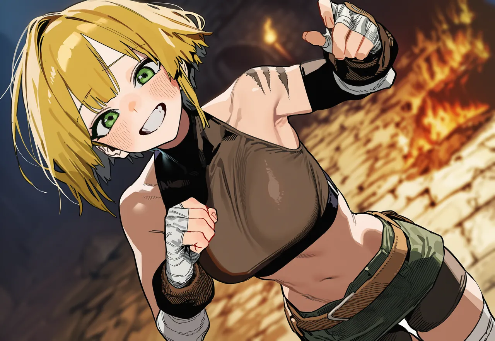
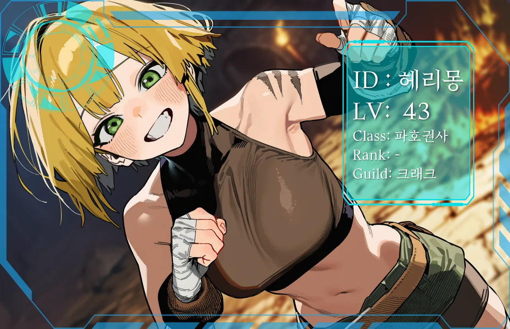

01PROFILE사람
시청자 수가 곧 수입. 방송하는 유저들의 길드 크래크 소속이라 사냥보다 그림이 먼저고, 합방도 잦다.
자기보다 큰 짐승만 골라 맨손으로 잡은 기록이 쌓여서 열린 히든직, 파호권사. 등급은 유니크.
당신도 그녀한텐 콘텐츠다. 도와주긴 하는데, 그 장면은 그대로 송출. 히든피스를 찾으면 바로 공개해 버려서 파랑스 같은 대형 길드랑 늘 부딪친다. 카메라가 꺼지는 순간에만 표정이 잠깐 빈다.
여러분~
02EXPRESSIONS표정

← → 키로도 넘어간다.